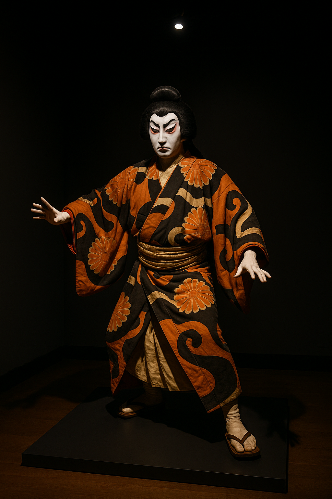

 When last we met… the Azuchi–Momoyama period ended in a blaze of musket fire and castles decorated with gold leaf. Tokugawa Ieyasu emerged from the Battle of Sekigahara in 1600 as the master of Japan. After decades of war and two dazzling but short‑lived regimes under Oda Nobunaga and Toyotomi Hideyoshi, the country was ready for a long nap. Ieyasu obliged, establishing a regime that would keep Japan mostly peaceful for more than 250 years. This is the story of the Edo period—a time of samurai bureaucrats, locked borders, kabuki theatre, and enough rice taxes to build an empire. It is a tale both tranquil and turbulent, and it laid the foundations of modern Japan.
In 1603, Ieyasu received the title of shōgun, formalising his authority over a patchwork of domains. His model of governance blended medieval feudalism with a budding central bureaucracy. The country was divided into domains ruled by daimyō, who swore allegiance to the Tokugawa house. Ieyasu’s genius lay not just in defeating rivals but in keeping them loyal. He balanced powerful "outsider" daimyō (tozama) with allied houses (fudai) and his own relatives (shimpan). To prevent regional lords from amassing independent power, Ieyasu’s grandson Iemitsu instituted the sankin‑kōtai system in 1635: daimyō were required to maintain lavish residences in Edo and reside there every other year. Their wives and children effectively served as hostages. The resulting parade of lords travelling with huge entourages created a boom in highway economies; inns, tea houses and souvenir shops sprang up along the Tōkaidō road. Social order was deliberately frozen. Ieyasu’s successors codified a strict four‑tiered hierarchy: samurai, farmers, artisans and merchants. Mobility between classes was prohibited, and people were expected to dress and behave according to rank. Samurai were transformed from mounted warriors into bureaucrats; most spent their days keeping accounts, writing poetry or attending tea ceremonies rather than riding into battle. Farmers, who produced the rice taxes that funded the regime, were forbidden to take up trades or move to the cities. Artisans produced goods for urban markets, while merchants—officially the lowest class—quietly amassed wealth by financing the economy. This rigid system ensured stability but also sowed seeds of future tension as merchants grew rich and samurai fell into debt.
Early Tokugawa rulers welcomed limited trade with Europeans, but they soon perceived Christianity and foreign influence as threats. Missionaries had been executed under Hideyoshi; under Iemitsu the shogunate promulgated a series of seclusion edicts (1633–1639) that banned travel abroad, forbade Japanese from returning home, and limited foreign trade to Chinese and Dutch merchants confined to the artificial island of Dejima in Nagasaki. Portuguese and Spanish ships were barred entirely. The policy, later called sakoku, was not absolute isolation—commercial links continued with Korea, Ryukyu and the Dutch—but it insulated Japan from European colonialism and Christian proselytization. For more than two centuries, Japanese sailors who drifted to foreign shores could not legally return; those who tried were often executed as pirates. The policy allowed the Tokugawa to control information and maintain internal order, but it also kept Japan technologically behind Europe’s industrial revolution.
Tokugawa rule centred on Edo (modern Tokyo), a sleepy fishing village that Ieyasu transformed into a bustling metropolis. Edo Castle dominated the skyline, surrounded by a sprawling network of moats and gates. As daimyō fulfilled their sankin‑kōtai obligations, their processions of samurai and servants swelled the city's population. By the eighteenth century Edo boasted over one million residents, making it one of the world’s largest cities. Wood, paper and thatch buildings crowded narrow streets, while canals and rivers carried goods and people. Fire was a constant hazard; in 1657 the Great Meireki Fire consumed roughly 60% of the city and killed about 100,000 people. The disaster prompted urban planners to widen streets, build firebreaks and organise professional firefighting brigades. It also spurred new building codes and the relocation of kabuki theatres and pleasure districts to designated areas.
Paradoxically, the official disdain for merchants could not prevent a commercial revolution. Agriculture expanded and productivity increased, but commerce and manufacturing grew even faster. Edo, Osaka and Kyoto became hubs for silk, cotton, paper, porcelain and sake production. A thriving rice market developed in Osaka, creating an early form of futures trading. As merchants gained wealth, they financed the lavish lifestyles of their samurai patrons. This new urban class supported the ukiyo or “floating world” of kabuki theatre, bunraku puppet plays, geisha entertainment and licensed pleasure quarters. Artists such as Hokusai and Hiroshige produced ukiyo‑e woodblock prints, depicting landscapes, actors and courtesans. The haiku master Matsuo Bashō wandered the countryside writing 17‑syllable masterpieces about frogs, autumn leaves and the fleeting nature of life. The Genroku era (late 17th to early 18th century) epitomised this urban culture: decadent, witty, full of colour, yet rooted in a society that forbade social mobility.
The Tokugawa peace was repeatedly shaken by natural disasters and famines. The 1657 fire was followed by other conflagrations, earthquakes and outbreaks of disease. In the 1780s the Great Tenmei Famine struck; poor harvests and the 1783 eruption of Mount Asama killed more than 20,000 people and worsened the famine. Desperate peasants rioted in rice shops and attacked warehouses. The government’s slow response eroded confidence and exposed the limits of the shogunate’s paternalism. The most famous moral drama of the era occurred not in a rice field but in a courthouse. In 1701, daimyō Asano Naganori assaulted the shogunate official Kira Yoshinaka in Edo Castle after being insulted during ceremonial duties. Drawing a sword in the shogun’s castle was illegal; Asano was ordered to commit seppuku, and his clan’s lands were confiscated. Forty‑seven of his samurai became rōnin (masterless warriors). Led by Ōishi Yoshio, they spent nearly two years plotting revenge, disarming suspicion by posing as drunkards and tradesmen. On a snowy night in December 1702 they attacked Kira’s mansion, killed him and carried his head to Asano’s grave. The shogunate faced a dilemma: uphold the law or honour samurai loyalty. Ultimately the rōnin were ordered to commit seppuku—a sentence that acknowledged their bravery while maintaining legal order. Their story became a national legend, immortalised in plays and prints, and it encapsulated the era’s values: loyalty, honour, and the tension between law and justice.
By the late eighteenth century cracks were spreading through the Tokugawa edifice. The merchant class prospered and exerted cultural influence, while many samurai lived on fixed stipends that did not keep pace with rising prices. Samurai pawned heirloom swords, took up side jobs or arranged marriages with merchant daughters. Fiscal reforms attempted to rectify the imbalance, but they often burdened peasants with heavier taxes, prompting uprisings. Meanwhile, rural poverty worsened; famines led to protests and sometimes to the flight of peasants into cities, undermining the rigid social order. Intellectual currents also shifted. National Learning scholars emphasised ancient Japanese texts and Shinto over Chinese Confucian orthodoxy. The rangaku (“Dutch learning”) movement studied Western science through books imported via Dejima. Scholars dissected human corpses, charted the stars, and experimented with medicine, gradually eroding the sakoku mentality. As the world around Japan industrialised, some samurai realised that cannons and clocks were not things to be feared but tools to be mastered.
In July 1853, American Commodore Matthew Perry sailed into Edo Bay with four "black ships" and a letter from the U.S. President. His mission was to obtain protection for shipwrecked American sailors and access to ports for refuelling. Perry returned the following spring with a larger squadron; impressed by his show of force and keenly aware of what Western gunboats had done to China, the Tokugawa authorities signed the Treaty of Kanagawa on March 31, 1854, agreeing to open the ports of Shimoda and Hakodate for provisioning and granting the U.S. the right to appoint consuls. Though limited, the treaty broke Japan’s seclusion and allowed other Western nations to demand similar concessions. Soon trade treaties followed, tariffs were set by foreigners, and extraterritoriality was imposed. The unequal treaties sparked outrage among samurai who felt the shogunate had betrayed national sovereignty. Anti‑foreign slogans like “Expel the barbarians!” mingled with calls to "Revere the Emperor", galvanising political movements in domains like Satsuma and Chōshū. As foreign ships arrived, the Tokugawa regime found itself beset on all sides. Rebellions flared; the economy faltered; shogunal leadership wavered. In 1867 the last shōgun, Tokugawa Yoshinobu, abdicated. Allied samurai from Satsuma and Chōshū marched on Kyoto, proclaiming the Meiji Restoration and restoring political power to the emperor. Civil war followed, but the Tokugawa era was over. In its place came a modernising state eager to borrow technology and institutions from the West.
The Edo period bequeathed to Japan much more than a sense of nostalgia. It provided two and a half centuries of internal peace, political stability and economic growth, allowing culture to flourish and population to expand. The strict social hierarchy, though constraining, preserved order and gave rise to vibrant urban cultures. The policy of national seclusion prevented colonisation but left Japan vulnerable to Western industrial powers. The tragedies of fires, famines and moral crises like the 47 rōnin remind us that peace does not equate to paradise. Most importantly, the Edo period’s eventual breakdown illustrates that even the most carefully engineered systems must adapt or perish. In the next chapter of our blog series we will follow Japan as it leaps from feudal isolation into the modern world. The Meiji Restoration promises railways, telegraphs, abolition of samurai privileges and a constitution modelled on the West. Buckle up; the ride is about to accelerate.